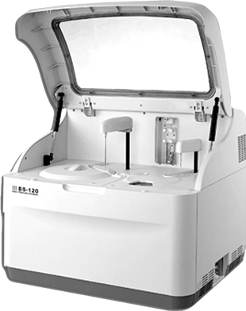

Bs-120 química clínica

CARACTERÍSTICAS:
• 100 pruebas por hora, hasta 300 pruebas por hora con ISE.
• 28 posiciones para reactivos y 8 para muestras refrigeradas.
• Limpieza automática de la cánula, detección del nivel de líquidos y protección contra golpes.
• 8 longitudes de onda 340-670nm.
• Dilución automática en muestras anormales.
• Lector de código de barras opcional.
• Capacidad para utilizar tubo primario: pediátricos y tubos de 12x68 a 13x100.
• Rango fotométrico 0 a 3.5 Abs.
• Modo mono y birreactivo.
• Capacidad para realizar pruebas turbidimétricas.
• Bajo costo de mantenimiento.
• Control de calidad integrado con gráficos de Levey-Jennings y reglas de Westgard.
• No requiere instalación especial.
DATOS COMPLEMENTARIOS: Para mayor información llamar a:
COMERCIALIZADORA DIFARMALAV, S.A. DE C.V.
Teléfonos: 01 222 594-3465, 755-3753, 755-3752
Lada sin costo: 01 800 DIFARMA, 01 800 161-6707
(01 800 343 2762)
e-mail: difarmaventas@hotmail.com
www.difarmalav.com.mx